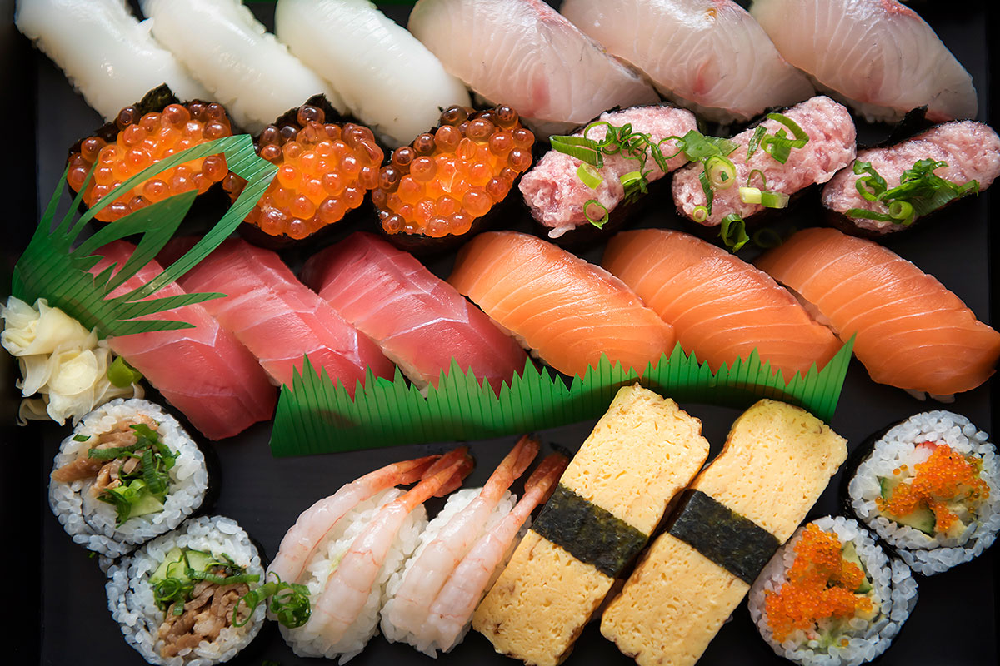
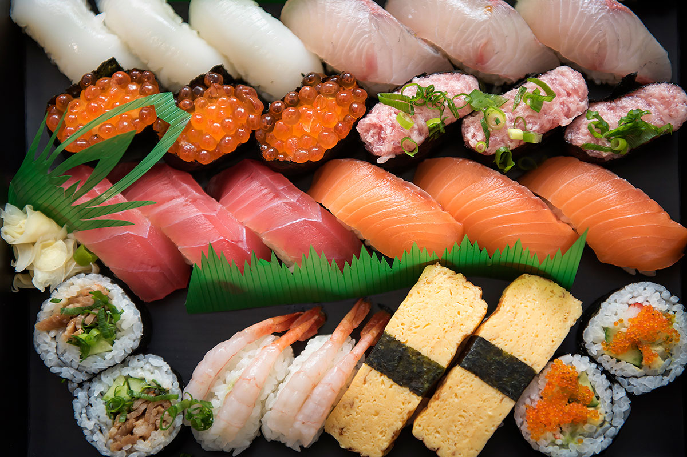

-Sushi is a traditional Japanese dish made with vinegared rice and various toppings.
-It combines fresh fish, rice, seaweed, and creative toppings for different flavor combinations.
-It's popular worldwide due to its unique flavors, health benefits, and cultural appeal.
-Modern sushi was developed in Edo-period Japan (around 1824).
-There are tons of different types of sushi: the two most popular being tuna and salmon nigiri.
-Tuna nigiri is made from the fattest part of the bluefin tuna belly and is known for its buttery texture.
-Salmon nigiri is fresh salmon placed on seasoned rice and offers healthy omega-3 fatty acids, making it both delicious and nutritious.

-Ramen originated from Chinese noodle dishes in the early 20th century and evolved into a uniquely Japanese comfort food.
-From miso ramen in Hokkaido to tonkotsu ramen in Fukuoka, each region offers different broths, noodles, and toppings.
-In the U.S., ramen restaurants nearly doubled from 800 in 2010 to 1,500 by 2025, reflecting its booming popularity.
-Interestingly, one way ramen got popular worldwide was through anime and manga.
-Shows like Naruto and Dragon Ball feature ramen as a comfort food, introducing millions of fans to it as part of everyday Japanese life.
-Fans go to ramen shops to eat like their favorite characters, making ramen not just food, but a gateway into Japanese identity and lifestyle.
-Mochi is made from glutinous rice. Steamed short-grain rice is pounded into a sticky, elastic dough.
-It plays a significant role in Japanese New Year celebrations, especially in the mochitsuki (rice-pounding ceremony), symbolizing prosperity and good fortune.
-Despite being over 1,000 years old, mochi remains a staple in Japanese households as a comfort food.
-There are many different mochis: the two most popular are daifuku and ozoni mochis.
-Daifuku mochi is filled with sweet red bean paste, often with variations like strawberry daifuku. It's the most widely recognized sweet mochi in Japan and abroad.
-Ozoni mochi is served in a traditional New Year's soup. This preparation is tied to Japanese culture and is enjoyed nationwide during the holiday season.
-Takoyaki are a Japanese street snack that originated in the city of Osaka. They are little round balls of wheat flour-based batter that are crispy on the outside and soft on the inside
-It's usually filled with diced octopus (tako), tempura scraps (tenkasu), pickled ginger (beni shoga), and green onion.
-Takoyaki is cooked a molded pan, typically a griddle made of cast iron with hemispherical molds,
-Some people found out about takoyaki through manga, anime, and video games. Takoyaki is the favorite food of Taruruto, the character of Magical Taruruto (1988 manga series). The food plays a major role in several episodes of the anime and a film, and also serves as collectibles and platforms in several video games.